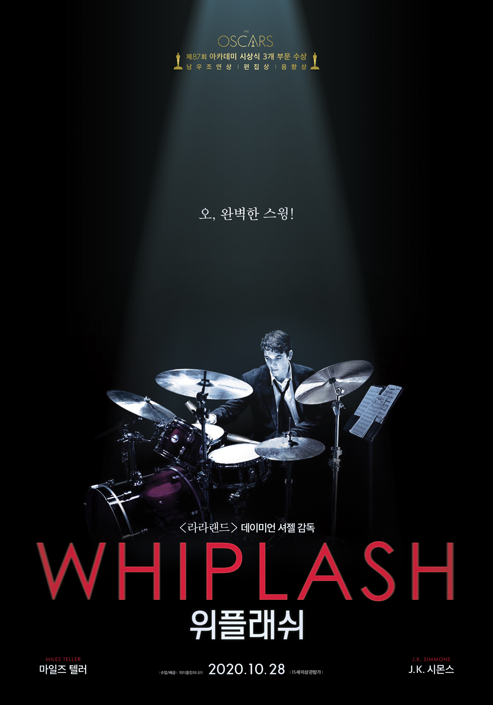

| 순위 |
제목 |
포스터 |
줄거리 |
바로가기 |
| 1 |
비긴 어게인 |
 |
싱어송라이터인 ‘그레타’(키이라 나이틀리)는 남자친구 ‘데이브’(애덤 리바인)가 메이저 음반회사와 계약을 하게 되면서 뉴욕으로 오게 된다. 그러나 행복도 잠시, 오랜 연인이자 음악적 파트너로서 함께 노래를 만들고 부르는 것이 좋았던 그레타와 달리 스타가 된 데이브의 마음은 어느새 변해버린다.
스타 음반프로듀서였지만 이제는 해고된 ‘댄’(마크 러팔로)은 미치기 일보직전 들른 뮤직바에서 그레타의 자작곡을 듣게 되고 아직 녹슬지 않은 촉을 살려 음반제작을 제안한다. 거리 밴드를 결성한 그들은 뉴욕의 거리를 스튜디오 삼아 진짜로 부르고 싶었던 노래를 만들어가는데… |
클릭
|
| 2 |
기생충 |
 |
전원백수로 살 길 막막하지만 사이는 좋은 기택(송강호) 가족.
장남 기우(최우식)에게 명문대생 친구가 연결시켜 준 고액 과외 자리는
모처럼 싹튼 고정수입의 희망이다.
온 가족의 도움과 기대 속에 박사장(이선균) 집으로 향하는 기우.
글로벌 IT기업 CEO인 박사장의 저택에 도착하자
젊고 아름다운 사모님 연교(조여정)가 기우를 맞이한다. |
클릭
|
| 3 |
내부자들 |
 |
자신을 폐인으로 만든 일당에게 복수를 계획하는 정치깡패 안상구
비자금 파일과 안상구라는 존재를 이용해 성공하고 싶은 무족보 검사 우장훈
그리고 비자금 스캔들을 덮어야 하는 대통령 후보와 재벌, 그들의 설계자 이강희
과연 살아남는 자는 누가 될 것인가? |
클릭
|
| 4 |
베테랑 |
|
한 번 꽂힌 것은 무조건 끝을 보는 행동파 ‘서도철’(황정민),
20년 경력의 승부사 ‘오팀장’(오달수), 위장 전문 홍일점 ‘미스봉’(장윤주), 육체파 ‘왕형사’(오대환), 막내 ‘윤형사’(김시후)까지
겁 없고, 못 잡는 것 없고, 봐 주는 것 없는 특수 강력사건 담당 광역수사대.
베테랑 광역수사대 VS 유아독존 재벌 3세
2015년 여름, 자존심을 건 한판 대결이 시작된다!
|
클릭
|
| 5 |
위플래시 |
 |
"박자가 안 맞잖아, 다시!"
뉴욕의 명문 셰이퍼 음악학교에서
최고의 스튜디오 밴드에 들어가게 된 신입생 '앤드류'
최고의 지휘자이지만 동시에 최악의 폭군인 '플레쳐'교수는
폭언과 학대로 '앤드류'를 한계까지 몰아붙이고 또 몰아붙인다.
드럼 주위로 뚝뚝 떨어지는 피,
빠르게 달리는 선율 뒤로 아득해지는 의식,
그 순간, 드럼에 대한 앤드류의 집착과 광기가 폭발한다.
최고의 연주를 위한 완벽한 스윙이 시작된다! |
클릭
|